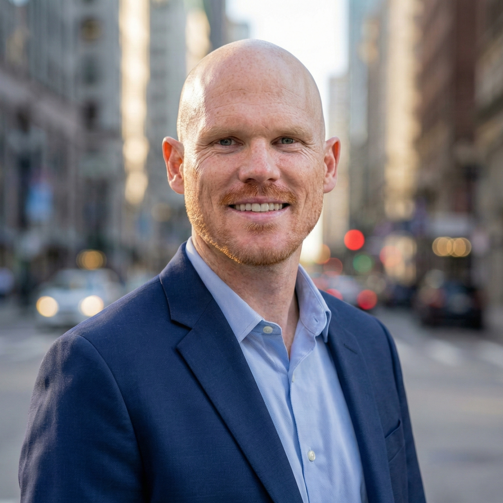
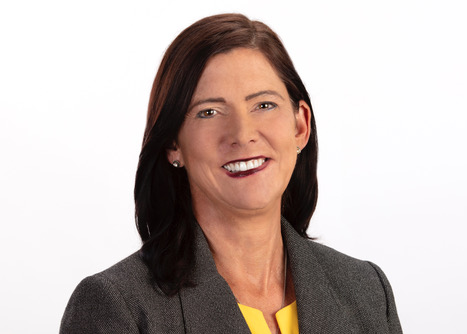
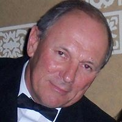

Community Play Tools is a civic-tech studio based in St. Petersburg, Florida. We pair strategy and facilitation with tools we design and build ourselves — so good ideas don't die in a half-empty meeting room.

Most consultants pick one lane. Ryan has run two. For seven years he managed high-stakes programs at Sony PlayStation — innovation initiatives, global summits, and payment-system launches — learning to coordinate engineers, navigate legal compliance, and deliver on impossible deadlines.
Then he spent two years as President of Beautiful PB, a San Diego community-planning nonprofit, where he moved controversial projects through city approval boards and raised $450,000 to restore a historic building. The skills overlap more than you'd think: both are about too many people with competing priorities, and finding a way forward.
Community Play Tools is where those two halves come together — Fortune-500 program rigor and grassroots civic leadership, now focused on St. Petersburg and the tools that make participation feel like play.
Ryan builds the tools himself — full-stack (Rails, React Native, Supabase) and AI-native, using Claude Code as a daily working tool to move faster on repeatable parts of the job, from Signal Fire's codebase to this website. The judgment on what to build and why still has to be his; the AI just clears the mechanical work out of the way.
CPT is intentionally lean — you work directly with the people doing the work, backed by a network of collaborators we bring in as projects need them.
Strategy, facilitation, and product. Ex–Sony PlayStation senior program manager; past President of Beautiful PB.
We partner with trusted specialists — engineers, designers, and community organizers — and scale the team to the engagement.
We're always glad to meet people who care about making civic life more human. Say hello →
Senior Program Manager — Commerce, Tax, Payments & Fraud, and the Innovation Engine. Led PayPal integration, international tax systems, the PS5 prerelease purchase system, and innovation work with IDEO. Facilitated global summits of 80–240 people.
Vice President, then President. Scaled the budget from under $1,000 to $40,000 a year, led PB Pathways through contested approval, and raised $450,000 for the PB Arts Center.
Board member and Streets Subcommittee Chair on the Planning Group; member of the Parking Advisory Board — representing community interests on mobility and infrastructure decisions.
Founded CPT to bring program rigor and civic leadership to St. Pete — and launched Signal Fire, the studio's flagship product.
"Ryan's leadership combines thoughtful humility with exceptional expertise and drive. He has raised the bar for how younger leaders can contribute to urban planning, mobility, and community advocacy — proving that passion and deep engagement with the details can drive lasting change."

"Watching him evolve from a hesitant Vice President to a powerhouse community leader has been inspiring. He set a high standard for how younger generations can lead in urbanism — proving that with passion and a willingness to dive into the nitty-gritty, one person can drive institutional change."

"Ryan joined at a critical time and immediately took control of complex tasks many would find daunting. He has a rare ability to dive into the nitty-gritty of local issues, find where a difference can be made, and influence the community toward a forward-thinking agenda. He is the driver of the results that follow."
Whether you're a city department, a downtown partnership, a developer, or a foundation — we'd like to hear what you're working on.